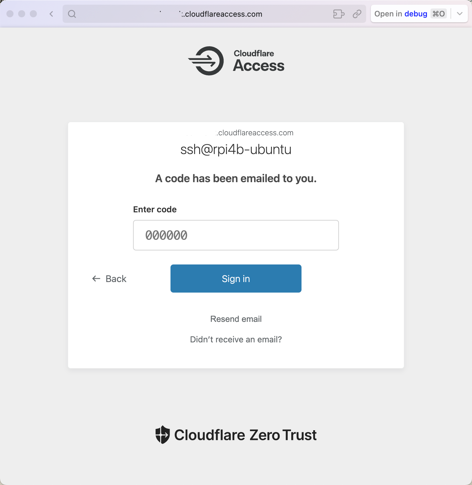

SSH through cloudflare access
Previously, I've created and run a cloudflared tunnel for web server exposure on the rpi4b-ubuntu platform.
In this article, I'll try to configure remote SSH through the Cloudflare zero-trust application and tunnel route, reusing a public hostname.
Official guidelines#
Connect with SSH through Cloudflare Tunnel
Cloudflare Zero Trust offers two solutions to provide secure access to SSH servers:
- Private subnet routing with Cloudflare WARP to Tunnel
- Public hostname routing with cloudflared access
Connect to SSH server with cloudflared access
Cloudflare Tunnel can also route applications through a public hostname, which allows users to connect to the application without the WARP client. This method requires having cloudflared installed on both the server machine and on the client machine, as well as an active zone on Cloudflare. The traffic is proxied over this connection, and the user logs in to the server with their Cloudflare Access credentials.
Connect the server to Cloudflare
-
Create a Cloudflare Tunnel by following our dashboard setup guide.
-
In the Public Hostnames tab, choose a domain from the drop-down menu and specify any subdomain (for example,
ssh.example.com). -
For Service, select SSH and enter
localhost:22. If the SSH server is on a different machine from where you installed the tunnel, enter<server IP>:22. -
Select Save hostname.
-
(Recommended) Add a self-hosted application to Cloudflare Access in order to manage access to your server.
As the tunnel is ready, I will focus on the final recommendation of adding a self-hosted application for the SSH session.
DNS route to ssh#
When cloudflared receives an incoming request, it evaluates each ingress rule from top to bottom to find which rule matches the request. Rules can match either the hostname or path of an incoming request, or both.
Wildcards
You can use wildcards to match traffic to multiple subdomains or paths. For example, if you set the hostname key to *.example.com, both test.example.com and try.example.com will route traffic to your origin.
Open the Cloudflare Dashboard, click Websites and choose a domain (e.g. dummy.com), then click DNS - Records in the left panel, the CNAME record lists the following.
| Type | Name | Content | Proxy status | TTL |
|---|---|---|---|---|
| CNAME | dummy.com |
79983784-9f0c-4fd7-b28c-cbdfc066f584.cfargotunnel.com | Proxied | Auto |
You can change the name dummy.com to a wildcard *. This will make it easier to configure the subdomains that map to the intranet SSH service.
| Type | Name | Content | Proxy status | TTL |
|---|---|---|---|---|
| CNAME | * |
79983784-9f0c-4fd7-b28c-cbdfc066f584.cfargotunnel.com | Proxied | Auto |
In this case, the tunnel route is now actually *.dummy.com, which corresponds to all the sub-domains, such as ssh.dummy.com.
A more practical solution is to add another CNAME record that configures subdomain ssh(.dummy.com) routing to the same target cfargotunnel.
| Type | Name | Content | Proxy status | TTL |
|---|---|---|---|---|
| CNAME | dummy.com |
79983784-9f0c-4fd7-b28c-cbdfc066f584.cfargotunnel.com | Proxied | Auto |
| CNAME | ssh |
79983784-9f0c-4fd7-b28c-cbdfc066f584.cfargotunnel.com | Proxied | Auto |
Apart from the DNS routing solution, you can of course create another dedicated tunnel cloudflared tunnel --hostname ssh.dummy.com --url ssh://localhost:22 for SSH as an alternative.
Config tunnel ingress rules#
Return to the machine running the cloudflared service.
Last time, we've just exposed web server through the cloudflared tunnel:
tunnel: cft
credentials-file: /home/pifan/.cloudflared/79983784-9f0c-4fd7-b28c-cbdfc066f584.json
url: http://localhost:81
To expose the SSH service, we need to reorganize the config.yml and configure ingress rules for traffic routing.
$ sudo vim /etc/ssh/sshd_config
tunnel: cft
credentials-file: /home/pifan/.cloudflared/79983784-9f0c-4fd7-b28c-cbdfc066f584.json
ingress:
- hostname: dummy.com
service: http://localhost
- hostname: ssh.dummy.com
service: ssh://localhost:22
- service: http_status:404
To validate the ingress rules in your configuration file, run:
To verify that cloudflared will proxy the right traffic to the right local service, use cloudflared tunnel ingress rule.
This checks a URL against every rule, from first to last, and shows the first rule that matches.
$ cloudflared tunnel ingress rule https://dummy.com/
Using rules from /home/pifan/.cloudflared/config.yml
Matched rule #0
hostname: dummy.com
service: http://localhost
$ cloudflared tunnel ingress rule ssh://ssh.dummy.com
Using rules from /home/pifan/.cloudflared/config.yml
Matched rule #1
hostname: ssh.dummy.com
service: ssh://localhost:22
Restart the cloudflared service for the rules to take effect immediately.
Add an Access Application#
Open Cloudflare Dashboard, Click Zero Trust to enter Cloudflare One page, select an account to log in.
Click Access - Applications in the left panel, find the + Add an Application button on the right and click. On your first attempt, you'll have to choose a plan before proceeding.
Steps: Select type > Configure application > Add policies > Setup.
To grant a user access to an application, simply add their email address to an Access policy.
-
Select application type:
Self-hosted -
Configure application:
- Application Name:
ssh@rpi4b-ubuntu - Session Duration:
24h - Subdomain:
ssh - Domain:
dummy.com
- Application Name:
-
Add policies:
- Policy Name:
Only You - Action:
Allow - Session Duration:
Same as application session timeoutor24h - Selector ->
Email - Value ->
Your Email Address(support multiple addresses)
- Policy Name:
-
Additional settings:
- Turn on
Enable automatic cloudflared authentication - Browser rendering (Beta):
SSH
- Turn on
-
Add application.
Configure short-lived cert#
User management - Short-lived certificates
Still in the Zero Trust / Cloudflare One page, goto Access - Service Auth - SSH, select an application and click the Generate certificate button to generate a short-lived certificate.
Click the Application name in the Short-lived certificates area, copy the public key and paste it into /etc/ssh/ca.pub on rpi4b-ubuntu.
Assuming your policy email is cft@gmail.com, add the following lines to /etc/ssh/sshd_config on rpi4b-ubuntu running sshd service.
Move on and carry out the following two steps:
- Uncomment
PubkeyAuthentication yes - Append
TrustedUserCAKeys /etc/ssh/ca.pub
Then restart SSH service: sudo systemctl restart ssh.
Configure SSH client#
End users can connect to the SSH session without any configuration by using Cloudflare's browser-based terminal. Users visit the URL of the application and Cloudflare's terminal handles the short-lived certificate flow.
On an SSH client platform such as macOS, run cloudflared access ssh-config to print the required configuration command:
$ cloudflared access ssh-config --hostname ssh.dummy.com --short-lived-cert
Add to your /Users/faner/.ssh/config:
Match host ssh.dummy.com exec "/opt/homebrew/bin/cloudflared access ssh-gen --hostname %h"
ProxyCommand /opt/homebrew/bin/cloudflared access ssh --hostname %h
IdentityFile ~/.cloudflared/%h-cf_key
CertificateFile ~/.cloudflared/%h-cf_key-cert.pub
Copy the SSH configuration generated above to ~/.ssh/config and try ssh to initiate a One-time PIN login.
Add the
-voption to enable verbose mode, printing more detailed debugging messages.
$ ssh -v pifan@ssh.dummy.com
A browser window should have opened at the following URL:
https://ssh.dummy.com/cdn-cgi/access/cli?aud=82a2ef3493f83718ae779bf1658b1e574634f81b7ba3a88102d35545fe7ffb73&edge_token_transfer=true&redirect_url=https%3A%2F%2Fssh.dummy.com%3Faud%3D82a2ef3493f83718ae779bf1658b1e574634f81b7ba3a88102d35545fe7ffb73%26token%3DpUNqPtNXsokMC-eMAVSSzgd9P-fvefdty12IKF2_Oy4%253D&send_org_token=true&token=pUNqPtNXsokMC-eMAVSSzgd9P-fvefdty12IKF2_Oy4%3D
If the browser failed to open, please visit the URL above directly in your browser.
It will open the access URL in default browser and redirect to YOURGROUP.cloudflareaccess.com's sign-in page. On the Sign-in page, enter your email(cft@gmail.com) and click Send me a code.

If the email is allowed by an Access policy, you will receive a PIN in your inbox. This secure PIN expires 10 minutes after the initial request.
Paste the PIN into the Access login page and select Sign in.

If the code was valid, you will be redirected to the application, and it will congratulate you on your success.

As indicated, a token has been returned to the requesting machine. Run ls -l ~/.cloudflared/ to check the generated tokens and cf_keys.
$ ls -l ~/.cloudflared/
total 40
-rw-------@ 1 faner staff 13 Jun 21 16:22 {Org-Name}.cloudflareaccess.com-org-token
-rw-------@ 1 faner staff 874 Jun 21 16:22 ssh.dummy.com-{AUD-Tag}-token
-rw-------@ 1 faner staff 227 Jun 21 16:05 ssh.dummy.com-cf_key
-rw-------@ 1 faner staff 793 Jun 21 16:05 ssh.dummy.com-cf_key-cert.pub
-rw-------@ 1 faner staff 161 Jun 21 16:05 ssh.dummy.com-cf_key.pub
Meanwhile, the console will prompt you to check and confirm the connection. Type yes or fingerprint(paste public key for verification).
The authenticity of host 'ssh.dummy.com (<no hostip for proxy command>)' can't be established.
ECDSA key fingerprint is SHA256:E6EQTRP/000BaadDaad1989FeedBabe0604DeadBeaf.
Are you sure you want to continue connecting (yes/no/[fingerprint])? yes
Warning: Permanently added 'ssh.dummy.com' (ECDSA) to the list of known hosts.
Next, you should be asked to enter the password for the SSH service.
If nothing else, you'd have successfully connected to your SSH server and been greeted with a welcome message.
debug1: Authentication succeeded (password).
Authenticated to ssh.dummy.com (via proxy) using "password".
Welcome to Ubuntu 22.04.4 LTS (GNU/Linux 5.15.0-1055-raspi aarch64)
Side Notes: Visit Zero Trust / Cloudflare One to view application statistics, trends and analytics.
- Zero Trust Overview: View and check
Top logins by application. - Click
My Team - Usersto view account identity and session management. You can revoke sessions or remove user as needed.
references#
Multiplex#
Many services, one cloudflared
Highly available and highly scalable Cloudflare tunnels
How to set up subdomain through a tunnel?
Cloudflare tunnel with second domain issue
Is it possible to connect two tunnels to one domain?
How to set a second cloudflare tunnel to my subdomain?
Multiple tunnels per config?
Multiple Tunnels Same Server
Run 2 cloudflared instances on 1 machine
Multiple Tunnels, One Cloudflared instance
One Tunnel for Multiple Servers with Different Services
macos - Cloudflared tunnel for hosting Multiple Domains on a single PC
Best practices - running multiple websites/services on the same cloudflared tunnel IPv4 & IPv6?
Access SSH#
Create an Access application
Add non-HTTP applications
Connect to application using cloudflared
Create SSH connections with Cloudflare Access
Accessing Your Raspberry Pi Remotely Using Cloudflare
How to SSH into a server protected by Cloudflare DNS
HOW TO: SSH into Raspberry Pi remotely through Cloudflare tunnel (terminal and putty).
HOW TO: Remote access a Raspberry Pi using a Cloudflare tunnel (node-red and ssh).
使用cloudflare tunnel免费内网穿透，实现网站的外网访问和远程桌面
SSHing to my Raspberry Pi 400 from a browser, with Cloudflare Tunnel and Auditable Terminal
How to access your Raspberry Pi via SSH or VNC from anywhere in the World using CloudFlare's Zero Trust